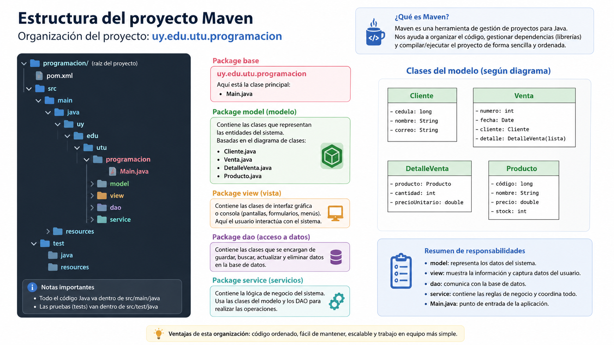

Tienda de Cómics: proyecto completo y comentado
Versión ordenada del proyecto Producto, con separación por clases y paquetes para que se vea con claridad dónde empieza y dónde termina cada parte del sistema.
1. Qué vamos a ver aquí
Esta página reúne la versión de referencia del proyecto Tienda de Cómics. La idea no es solo mostrar el código, sino también explicar la función de cada clase y la relación entre las capas.
ProductoDAO implementa CrudDAO<Producto>.
2. Organización final del proyecto Maven
Esta es la estructura que conviene mostrar a los estudiantes en la versión integrada final.
model
Representa los datos del sistema. Aquí vive Producto.
view
Construye la interfaz gráfica y expone métodos para que el controlador trabaje con ella.
controller
Registra listeners, convierte datos y coordina las operaciones entre vista y servicio.
service
Aplica las reglas de negocio y usa el contrato DAO, no la implementación concreta.
dao
Define el contrato CRUD y la clase que lo implementa con SQL.
config / exceptions
Centralizan la conexión JDBC y las excepciones de negocio.
3. Recorrido de una operación
Cuando el usuario pulsa Agregar, la información sigue este recorrido:
Producto.java
Entidad del sistema. Representa un producto de la tienda sin conocer ni JDBC ni MySQL.
package uy.edu.utu.programacion.model;
public class Producto {
private long codigo;
private String nombre;
private double precio;
private int stock;
public Producto(long codigo, String nombre,
double precio, int stock) {
this.codigo = codigo;
this.nombre = nombre;
this.precio = precio;
this.stock = stock;
}
// getters
public long getCodigo() { return codigo; }
public String getNombre() { return nombre; }
public double getPrecio() { return precio; }
public int getStock() { return stock; }
// setters de los datos modificables
public void setNombre(String nombre) { this.nombre = nombre; }
public void setPrecio(double precio) { this.precio = precio; }
public void setStock(int stock) { this.stock = stock; }
@Override
public String toString() {
return codigo + " - " + nombre
+ " - $" + precio
+ " - Stock: " + stock;
}
}Idea clave: el código identifica al producto. Por eso lo tratamos como un dato estable y no ofrecemos un setter para cambiarlo.
Conexion.java
Centraliza la apertura de la conexión JDBC con MySQL.
package uy.edu.utu.programacion.config;
import java.sql.Connection;
import java.sql.DriverManager;
import java.sql.SQLException;
public class Conexion {
private Connection conexion;
private static final String URL =
"jdbc:mysql://localhost:3306/tiendacomics";
private static final String USUARIO = "usuario_tienda";
private static final String CLAVE = "clave_de_ejemplo";
public Conexion() throws SQLException {
conexion = DriverManager.getConnection(URL, USUARIO, CLAVE);
}
public Connection getConexion() {
return conexion;
}
}Ojo: en este diseño, cada operación del DAO crea su propia conexión. Es una solución sencilla y adecuada para nuestra etapa de aprendizaje.
CrudDAO.java
Contrato genérico con las operaciones CRUD que el servicio necesita usar.
package uy.edu.utu.programacion.dao;
import java.sql.SQLException;
import java.util.List;
public interface CrudDAO<T> {
void guardar(T objeto) throws SQLException;
void modificar(T objeto) throws SQLException;
void eliminar(long codigo) throws SQLException;
List<T> listar() throws SQLException;
}Cuando escribimos CrudDAO<Producto>, el servicio sabe qué operaciones existen, pero no necesita saber cómo se implementan.
ProductoDAO.java
Implementación concreta del contrato. Aquí aparece SQL, JDBC y el trabajo con ResultSet.
package uy.edu.utu.programacion.dao;
import java.sql.Connection;
import java.sql.PreparedStatement;
import java.sql.ResultSet;
import java.sql.SQLException;
import java.util.ArrayList;
import java.util.List;
import uy.edu.utu.programacion.config.Conexion;
import uy.edu.utu.programacion.model.Producto;
public class ProductoDAO implements CrudDAO<Producto> {
@Override
public void guardar(Producto producto) throws SQLException {
String sql = "INSERT INTO producto (codigo, nombre, precio, stock) VALUES (?, ?, ?, ?)";
try (Connection conexion = new Conexion().getConexion();
PreparedStatement sentencia = conexion.prepareStatement(sql)) {
sentencia.setLong(1, producto.getCodigo());
sentencia.setString(2, producto.getNombre());
sentencia.setDouble(3, producto.getPrecio());
sentencia.setInt(4, producto.getStock());
sentencia.executeUpdate();
}
}
@Override
public void modificar(Producto producto) throws SQLException {
String sql = "UPDATE producto SET nombre = ?, precio = ?, stock = ? WHERE codigo = ?";
try (Connection conexion = new Conexion().getConexion();
PreparedStatement sentencia = conexion.prepareStatement(sql)) {
sentencia.setString(1, producto.getNombre());
sentencia.setDouble(2, producto.getPrecio());
sentencia.setInt(3, producto.getStock());
sentencia.setLong(4, producto.getCodigo());
sentencia.executeUpdate();
}
}
@Override
public void eliminar(long codigo) throws SQLException {
String sql = "DELETE FROM producto WHERE codigo = ?";
try (Connection conexion = new Conexion().getConexion();
PreparedStatement sentencia = conexion.prepareStatement(sql)) {
sentencia.setLong(1, codigo);
sentencia.executeUpdate();
}
}
@Override
public List<Producto> listar() throws SQLException {
List<Producto> productos = new ArrayList<>();
String sql = "SELECT codigo, nombre, precio, stock FROM producto ORDER BY codigo";
try (Connection conexion = new Conexion().getConexion();
PreparedStatement sentencia = conexion.prepareStatement(sql);
ResultSet resultado = sentencia.executeQuery()) {
while (resultado.next()) {
long codigo = resultado.getLong("codigo");
String nombre = resultado.getString("nombre");
double precio = resultado.getDouble("precio");
int stock = resultado.getInt("stock");
productos.add(new Producto(codigo, nombre, precio, stock));
}
}
return productos;
}
}implements CrudDAO<Producto> muestra el contrato que cumple la clase, y el try-with-resources se encarga de cerrar conexión, sentencia y resultados.CampoVacioException y NumeroNegativoException
Expresan errores del negocio, no errores de JDBC.
package uy.edu.utu.programacion.exceptions;
public class CampoVacioException extends Exception {
public CampoVacioException(String mensaje) {
super(mensaje);
}
}package uy.edu.utu.programacion.exceptions;
public class NumeroNegativoException extends Exception {
public NumeroNegativoException(String mensaje) {
super(mensaje);
}
}ProductoService.java
Aplica las reglas del negocio y aprovecha el polimorfismo al trabajar con la interfaz CrudDAO<Producto>.
package uy.edu.utu.programacion.service;
import java.sql.SQLException;
import java.util.List;
import uy.edu.utu.programacion.dao.CrudDAO;
import uy.edu.utu.programacion.model.Producto;
import uy.edu.utu.programacion.exceptions.CampoVacioException;
import uy.edu.utu.programacion.exceptions.NumeroNegativoException;
public class ProductoService {
private CrudDAO<Producto> productoDAO;
public ProductoService(CrudDAO<Producto> productoDAO) {
this.productoDAO = productoDAO;
}
public void agregar(Producto producto)
throws CampoVacioException, NumeroNegativoException, SQLException {
validar(producto);
productoDAO.guardar(producto);
}
public void modificar(Producto producto)
throws CampoVacioException, NumeroNegativoException, SQLException {
validar(producto);
productoDAO.modificar(producto);
}
public void eliminar(long codigo) throws SQLException {
productoDAO.eliminar(codigo);
}
public List<Producto> listar() throws SQLException {
return productoDAO.listar();
}
private void validar(Producto producto)
throws CampoVacioException, NumeroNegativoException {
if (producto.getNombre() == null || producto.getNombre().isBlank()) {
throw new CampoVacioException("El nombre del producto no puede estar vacío");
}
if (!Double.isFinite(producto.getPrecio()) || producto.getPrecio() < 0) {
throw new NumeroNegativoException("El precio debe ser un número válido y no negativo");
}
if (producto.getStock() < 0) {
throw new NumeroNegativoException("El stock no puede ser negativo");
}
if (producto.getCodigo() <= 0) {
throw new NumeroNegativoException("El código debe ser mayor que cero");
}
}
}La clave didáctica: el servicio declara su atributo como CrudDAO<Producto> y no como ProductoDAO. Así conoce el contrato, no la implementación concreta.
Producto_Vista.java
Construye la interfaz y ofrece métodos de apoyo para que el controlador capture datos, limpie campos y actualice la tabla.
package uy.edu.utu.programacion.view;
// imports abreviados para facilitar la lectura
import java.awt.*;
import java.awt.event.ActionListener;
import java.util.List;
import javax.swing.*;
import javax.swing.table.DefaultTableModel;
import uy.edu.utu.programacion.model.Producto;
public class Producto_Vista extends JFrame {
private JTextField txtCodigo, txtNombre, txtPrecio, txtStock;
private JButton btnAgregar, btnModificar, btnEliminar, btnCancelar;
private JTable tabla;
private DefaultTableModel modeloTabla;
public Producto_Vista() {
crearVentana();
}
private void crearVentana() {
setTitle("Tienda de Cómics");
setSize(750, 500);
setLocationRelativeTo(null);
setDefaultCloseOperation(JFrame.EXIT_ON_CLOSE);
JPanel panelPrincipal = new JPanel(new BorderLayout(10, 10));
JPanel panelFormulario = new JPanel(new BorderLayout(5, 5));
panelFormulario.add(new JLabel("Administración de productos"), BorderLayout.NORTH);
JPanel panelCampos = new JPanel(new GridLayout(4, 2, 5, 5));
txtCodigo = new JTextField();
txtNombre = new JTextField();
txtPrecio = new JTextField();
txtStock = new JTextField();
panelCampos.add(new JLabel("Código:")); panelCampos.add(txtCodigo);
panelCampos.add(new JLabel("Nombre:")); panelCampos.add(txtNombre);
panelCampos.add(new JLabel("Precio:")); panelCampos.add(txtPrecio);
panelCampos.add(new JLabel("Stock:")); panelCampos.add(txtStock);
panelFormulario.add(panelCampos, BorderLayout.CENTER);
JPanel panelBotones = new JPanel(new FlowLayout());
btnAgregar = new JButton("Agregar");
btnModificar = new JButton("Modificar");
btnEliminar = new JButton("Eliminar");
btnCancelar = new JButton("Cancelar");
panelBotones.add(btnAgregar); panelBotones.add(btnModificar);
panelBotones.add(btnEliminar); panelBotones.add(btnCancelar);
panelFormulario.add(panelBotones, BorderLayout.SOUTH);
panelPrincipal.add(panelFormulario, BorderLayout.NORTH);
modeloTabla = new DefaultTableModel(new Object[]{"Código", "Nombre", "Precio", "Stock"}, 0) {
@Override
public boolean isCellEditable(int fila, int columna) { return false; }
};
tabla = new JTable(modeloTabla);
panelPrincipal.add(new JScrollPane(tabla), BorderLayout.CENTER);
setContentPane(panelPrincipal);
}
// getters, listeners, limpiarCampos(), actualizarTabla() y cargarFilaSeleccionada()
}Para no volver interminable la lectura, aquí mostramos la parte estructural de la clase. Los métodos auxiliares de la vista se conservan en el proyecto y cumplen la misma lógica que trabajamos en los SCORM de Vista.
ProductoController.java
Conecta las acciones de la vista con el servicio y gestiona la conversión de texto a números.
package uy.edu.utu.programacion.controller;
import java.sql.SQLException;
import javax.swing.JOptionPane;
import uy.edu.utu.programacion.model.Producto;
import uy.edu.utu.programacion.service.ProductoService;
import uy.edu.utu.programacion.view.Producto_Vista;
import uy.edu.utu.programacion.exceptions.CampoVacioException;
import uy.edu.utu.programacion.exceptions.NumeroNegativoException;
public class ProductoController {
private Producto_Vista vista;
private ProductoService servicio;
public ProductoController(Producto_Vista vista, ProductoService servicio) {
this.vista = vista;
this.servicio = servicio;
agregar(); modificar(); eliminar(); cancelar(); seleccionarProducto(); actualizarTabla();
}
private Producto leerProducto() {
long codigo = Long.parseLong(vista.getTxtCodigo().trim());
String nombre = vista.getTxtNombre();
double precio = Double.parseDouble(vista.getTxtPrecio().trim());
int stock = Integer.parseInt(vista.getTxtStock().trim());
return new Producto(codigo, nombre, precio, stock);
}
// cada listener captura datos, llama al servicio y actualiza la tabla
public void agregar() {
vista.listenerAgregar(e -> {
try {
Producto producto = leerProducto();
servicio.agregar(producto);
actualizarTabla();
vista.limpiarCampos();
JOptionPane.showMessageDialog(vista, "Producto agregado correctamente");
} catch (NumberFormatException ex) {
mostrarError("Código, precio o stock incorrectos");
} catch (CampoVacioException | NumeroNegativoException ex) {
mostrarError(ex.getMessage());
} catch (SQLException ex) {
mostrarError("Error de base de datos: " + ex.getMessage());
}
});
}
// también existen modificar(), eliminar(), cancelar(), seleccionarProducto() y actualizarTabla()
private void mostrarError(String mensaje) {
JOptionPane.showMessageDialog(vista, mensaje, "Error", JOptionPane.ERROR_MESSAGE);
}
}El controlador no escribe SQL y no valida reglas de negocio profundas: coordina y distribuye responsabilidades.
Main.java
Construye los objetos principales y establece las relaciones entre ellos.
package uy.edu.utu.programacion;
import javax.swing.SwingUtilities;
import com.formdev.flatlaf.FlatLightLaf;
import uy.edu.utu.programacion.dao.CrudDAO;
import uy.edu.utu.programacion.dao.ProductoDAO;
import uy.edu.utu.programacion.model.Producto;
import uy.edu.utu.programacion.service.ProductoService;
import uy.edu.utu.programacion.controller.ProductoController;
import uy.edu.utu.programacion.view.Producto_Vista;
public class Main {
public static void main(String[] args) {
FlatLightLaf.setup();
SwingUtilities.invokeLater(() -> {
Producto_Vista vista = new Producto_Vista();
CrudDAO<Producto> dao = new ProductoDAO();
ProductoService servicio = new ProductoService(dao);
new ProductoController(vista, servicio);
vista.setVisible(true);
});
}
}dao se declara con la interfaz CrudDAO<Producto>, aunque el objeto concreto creado es new ProductoDAO().Script básico de base de datos
Tabla mínima necesaria para que el DAO funcione.
CREATE DATABASE IF NOT EXISTS tiendacomics;
USE tiendacomics;
CREATE TABLE IF NOT EXISTS producto (
codigo BIGINT PRIMARY KEY,
nombre VARCHAR(100) NOT NULL,
precio DECIMAL(10,2) NOT NULL,
stock INT NOT NULL
);En este curso mantenemos double en el modelo porque acompaña el trabajo previo del grupo. En contextos comerciales reales conviene usar BigDecimal para representar importes monetarios.
4. Qué resuelve esta versión y qué mejoraría después
- Integra las capas que venimos estudiando: Vista, Controller, Service, DAO y Config.
- Muestra JDBC directo con PreparedStatement, ResultSet y try-with-resources.
- Aplica polimorfismo al trabajar con la interfaz
CrudDAO<Producto>. - Separa errores de negocio de errores de persistencia.
Más adelante, podríamos mejorar tres cosas: informar cuando un UPDATE o DELETE no afectó filas, crear excepciones propias de persistencia y trabajar con transacciones que agrupen varias operaciones.